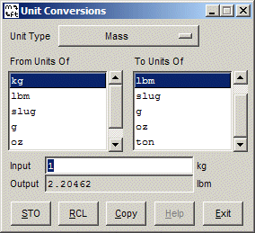

|  | This window provides the capability to do simple
unit conversions. It is invoked by CGNSview from either the
Tools->Unit
Conversions menu or the toolbar button. It may also be invoked in stand-alone
mode from the command line.
The type of units are selected from the Unit Type menu button, and the input and output units are highlighted in the listboxes. Typing in the Input entry field will result in the current value being converted from the input units to the output units. The entry field accepts arithmetic expressions, so you may type an expression like 75/3+1. It will also accept some basic C-type math operators like log() and sin(). The STO button will store the current value in the output field, and the RCL button will past the stored value into the input field at the current cursor location. The Copy button will copy the input field value into the clipboard for pasting into other applications. |